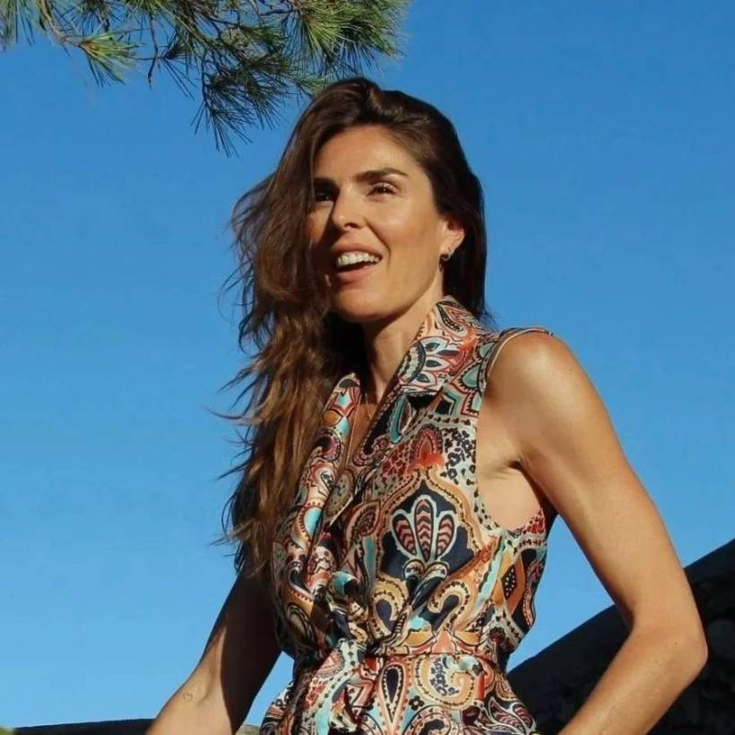
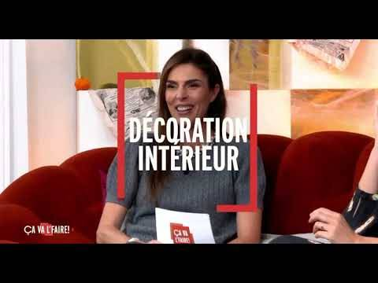
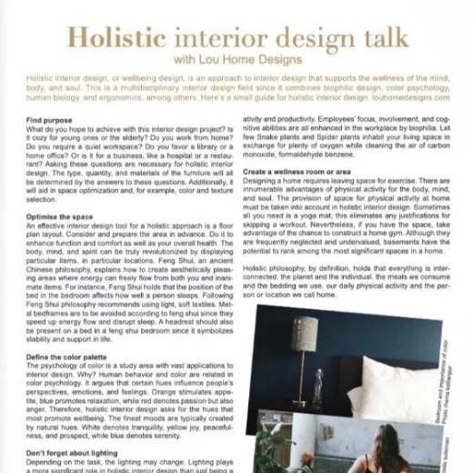
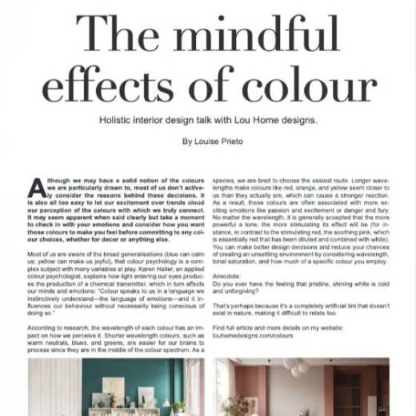
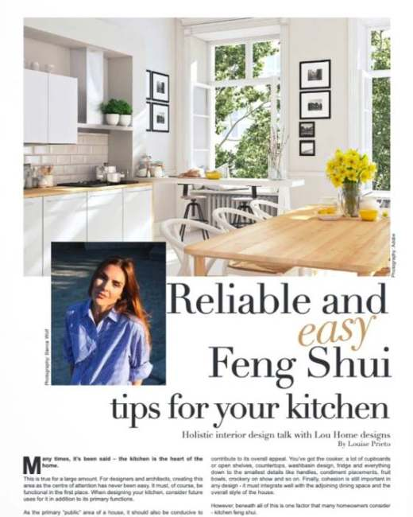
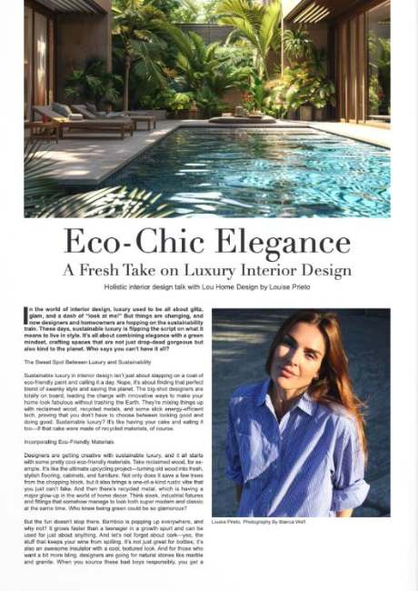
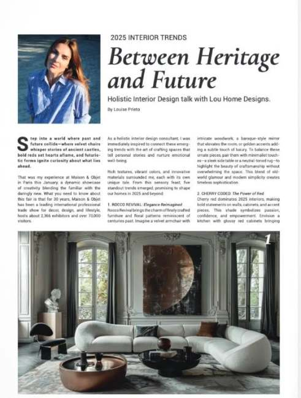
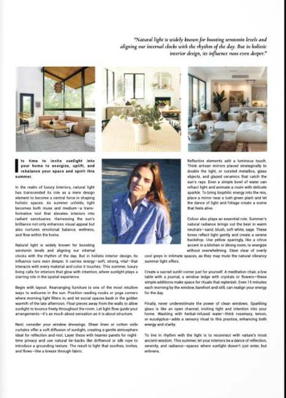

Décoratrice, coordinatrice, partenaire créative.

Mon chemin vers la décoration a commencé quelque part entre un atelier parisien et une quincaillerie du sud de la France. Ce contraste dit tout de ma façon de travailler.
Votre maison est votre troisième peau.
Après votre corps et vos vêtements, c'est l'environnement qui vous porte. Il façonne vos matins, vous ressource après les journées difficiles, et dit doucement au monde, et à vous-même, qui vous devenez.
J'apporte la rigueur de la mode à la chaleur de la maison. Mon approche puise dans le design holistique, le Feng Shui et le développement personnel, et je prends en charge le complexe, le fastidieux et le stressant pour que le projet soit la belle transformation qu'il doit être.
Vous me trouverez sur mon tapis de yoga à l'aube, perdue chez un fleuriste, ou en pleine obsession devant des échantillons de carrelage sur un salon professionnel. Toujours avec le même but : une maison qui vous va, comme la tenue parfaite.
Avec toute ma chaleur, Lou · Fondatrice, Home Muse
Mon approche
Écouter. Révéler. Transformer.
Écouter
Chaque projet commence par une vraie conversation. Pas sur les tendances, sur vous et ce que vous voulez ressentir chez vous.
Révéler
La plupart de mes clients savent déjà ce qu'ils veulent. Ils n'ont juste pas eu l'espace pour le formuler. C'est cette clarté que je vous aide à trouver.
Transformer
Puis nous le construisons, avec intention, précision, et un fil holistique qui relie chaque matière et chaque détail.
Vue sur TV Monaco
Ça va l'faire, la chronique déco.
J'anime une chronique déco régulière sur TV Monaco, avec des conseils pratiques et accessibles sur l'agencement, la couleur, le tri et l'optimisation holistique, à appliquer chez soi.

À lire dans Relentless Magazine





